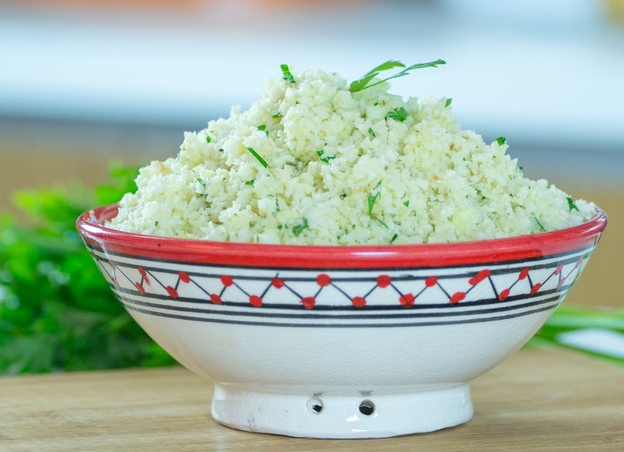
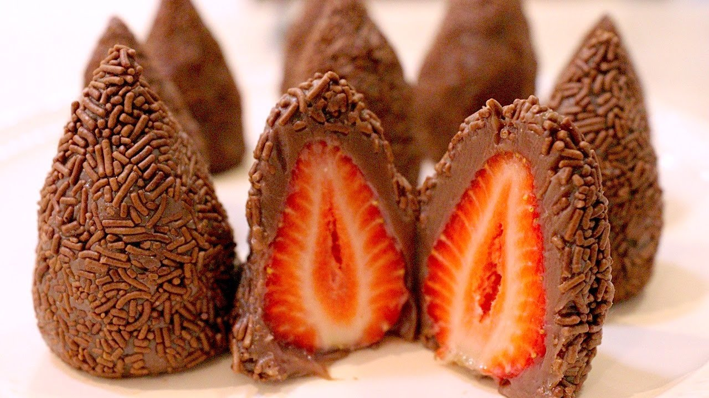

Arroz de couve flor
Ingredientes:
- Arroz
- Couve-flor
- Cebola Média
- Azeite
Modo de Preparo: ...
Deixe a couve-flor picada. Adicione os ingredientes e refogue bem. Adicione sal, tampe a panela e deixe cozinhar

Bolo de café
Ingredientes: ...
- Farinha de trigo
- Açúcar
- Café coado
- Chocolate em pó
- ovos
Modo de Preparo: ...
Bata o açúcar, as gemas e o café. Adicione a farinha e o chocolate e mexa bem. Bata as claras e junte a mistura.

Coxinha de brigadeiro
Ingredientes: ...
- Leite condensado
- Chocolate em pó
- Manteiga
- Morango
- Chocolate granulado
Modo de Preparo: ...